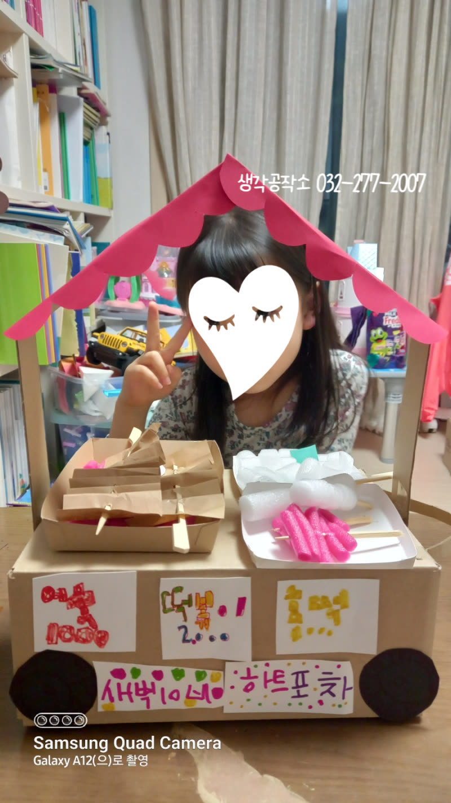
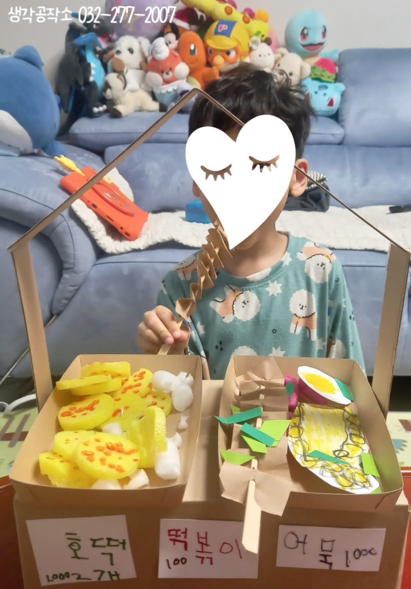
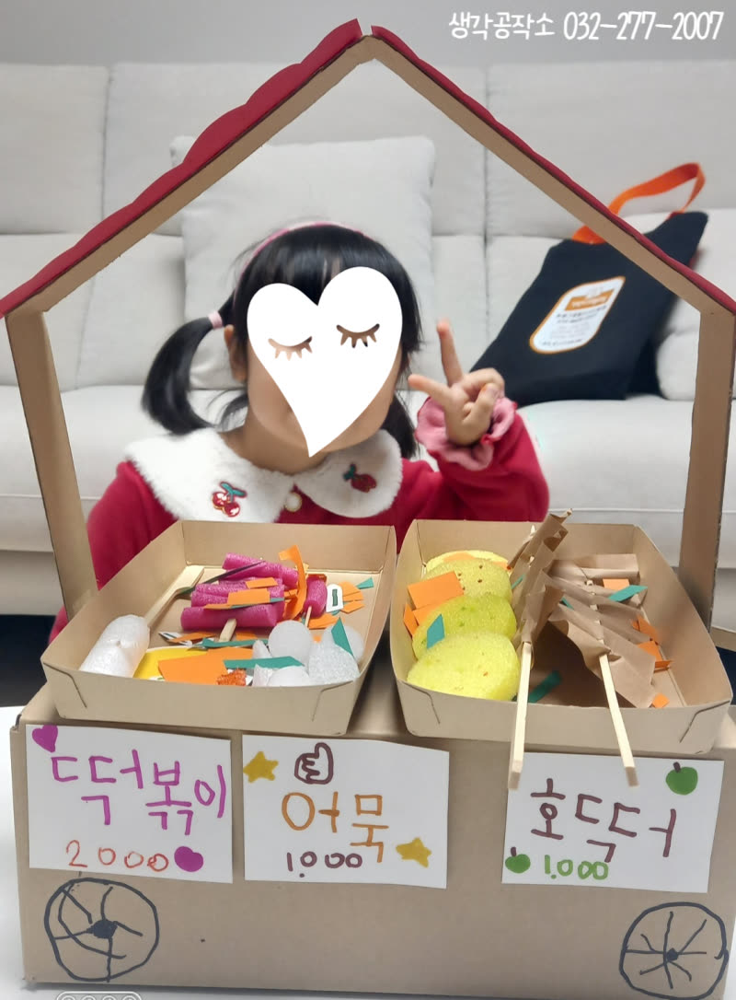
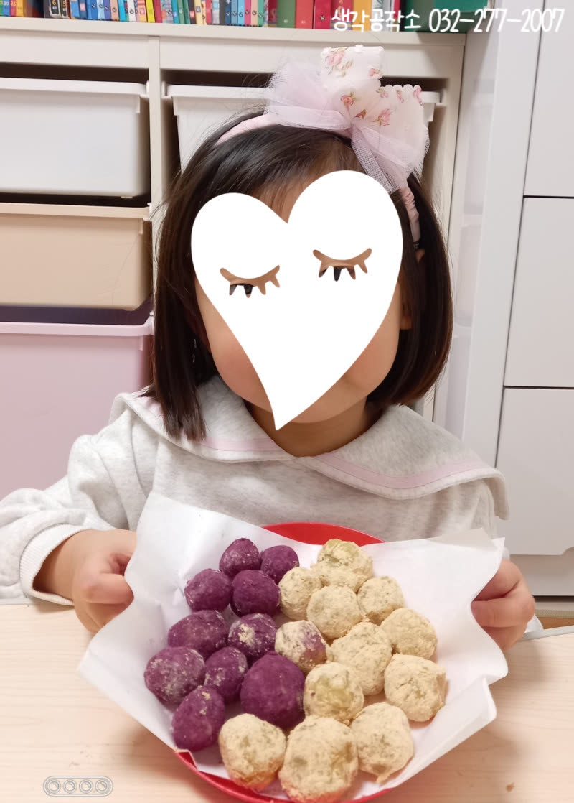
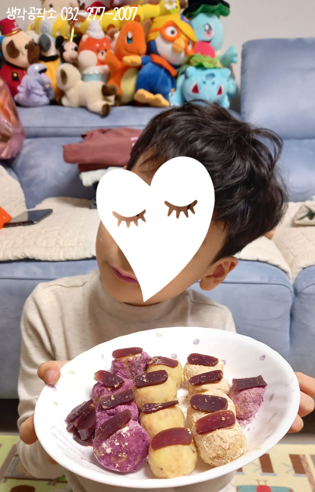
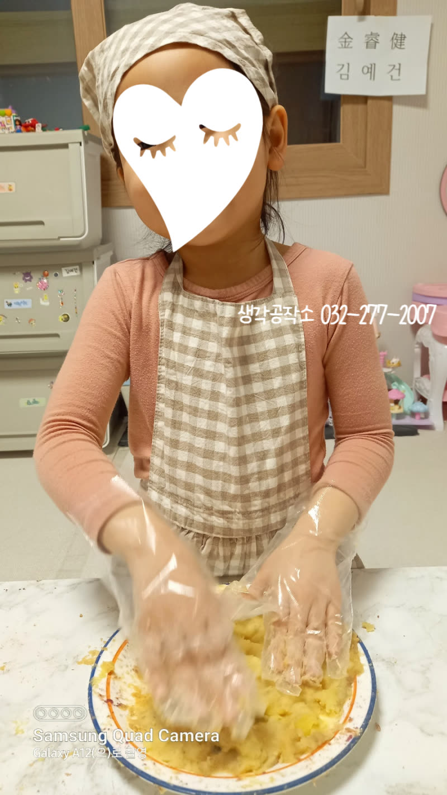
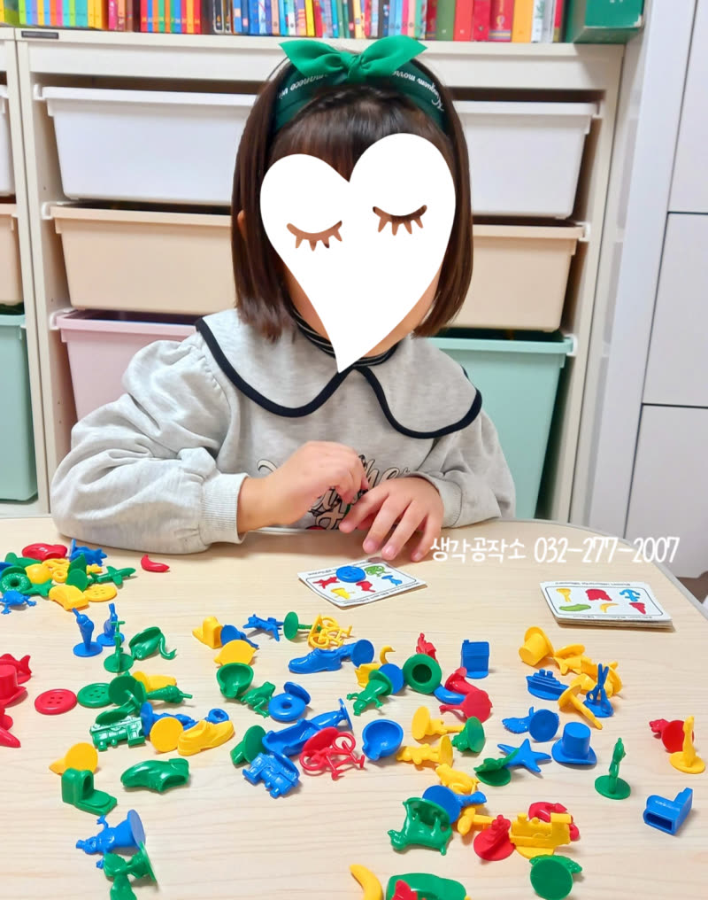
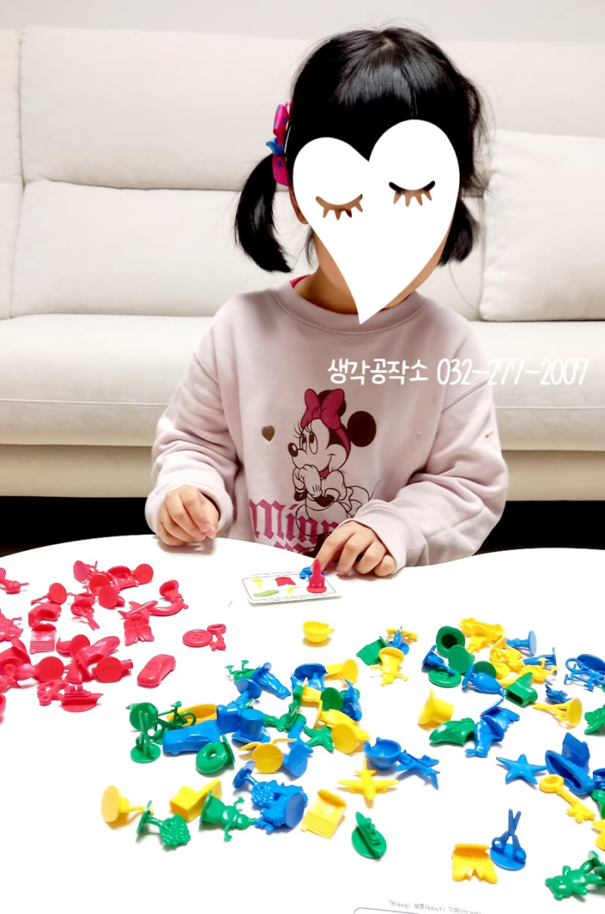

겨울 간식 포차 오픈🍢 아이들의 손으로 만든 꿀맛 간식 대잔치!
안녕하세요, 생각공작소 입니다. :)
오늘은 아이들과 함께 쌀쌀한 봄 추위를
잊게 만드는 특별한 시간을 보냈습니다!
바로 겨울 간식 포차 만들기와 고구마 떡 만들기 수업이었는데요.
아이들의 창의력과 상상력이 반짝반짝 빛나는 시간이었답니다. ✨



♡ 미술 수업 ♡
먼저, 하드보드지와 종이를 활용하여 알록달록 예쁜 간식 포차를 만들었습니다.
뚝딱뚝딱, 아이들의 상상력이 더해진 포차에는
스펀지로 만든 호떡,
빨간 스티로폼으로 만든 떡볶이,
갈색 종이를 겹쳐 꽂아 만든 어묵까지
맛있는 간식들이 채워졌습니다. 🍢
아이들의 손길이 닿으니, 평범한 재료들이 맛있는 겨울 간식으로 변신했습니다.
아기자기한 포차에 아이들의 얼굴에도 웃음꽃이 활짝 피었네요. 🌸



♡ 요리 수업 ♡
다음은 달콤한 고구마 떡 만들기 시간! 🍠
달콤한 고구마의 향기가 가득한 주방에서,
아이들은 찹쌀가루와 고구마를 섞어 떡을 조물조물 빚고,
개성 넘치는 모양을 만들었습니다.
직접 만든 따끈한 고구마 떡을 맛보며
"내가 만들었지만 정말 맛있다!"
를 외치는 아이들의 모습이 정말 사랑스러웠습니다. 😋


♡ 보드게임 수업 ♡
마지막으로, 관찰력과 순발력을 키워주는 보드게임
'아이스파이 딕인 (I Spy Dig In)' 시간! 🔎
수많은 물건 그림 속에서 제시된 그림을 빠르게 찾아내는 게임을 통해
아이들의 집중력과 관찰력이 쑥쑥 자라났습니다.
경쟁 속에서 협력하며 함께 답을 찾아가는 모습도 인상적이었답니다. 🤝
오늘 수업을 통해 아이들은 창의력과 협동심을 키우고,
직접 만든 간식을 맛보며 성취감을 느꼈을 것입니다.
앞으로도 아이들이 오감으로 느끼고 배우며 즐겁게 성장할 수 있도록
다채로운 프로그램을 준비하겠습니다! 🙌
인천시 남동구, 연수구, 미추홀구, 서구 에 위치한 #심리상담센터 로
전연령층과 전직종을 대상으로 #심리상담 을 도와주는 곳입니다. :)
평생을 미술치료와 심리상담에 종사하신 소장님과
실력과 경험 많은 상담사들이 당신을 기다리고 있습니다.
더욱 자세한 정보는 문의를 통해 확인해주세요 :)
T. 032-277-2007